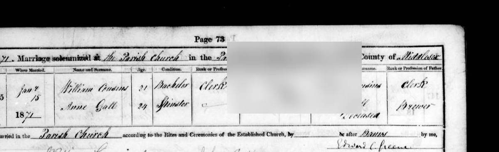

Rosina Maud Andrews was born Rosina Maud Cousins, at Bermondsey, on 14 November 1881. Her mother was Annie Cousins, nee Gall. Her younger sister May Florence Cousins was Auntie May.
William was probably baptised on 1 December 1850 at St John, Hackney, the son of William Cousins and his wife Elizabeth. At the baptism his father was a porter. In 1861 the family was probably living at Mile End Old Town, and William's brothers and sisters included Amelia. His father was a messenger in that census (St John, Hackney, baptisms, Ancestry record 2494246; 1861 census, RG9/293, folio 180, page 18, Mile End Old Town, Ancestry record 5902323).

On 15 January 1871 William was 21 and a clerk. Anne was 24. The register names his father as William Cousins, a clerk, and does not say the father was dead. Her father, John Gall, was a brewer, and he had died before the wedding. By 1881 William was a wharf foreman in Bermondsey. Annie was born about 1846 at Thetford, Norfolk. The birth index gives the mother's maiden name as Gall, or Galle, for all eight children, so the maiden name is certain.
Annie probably died in the September quarter of 1900 in the West Ham district, volume 4a, page 76, aged 53. She is gone by the 1901 census. William was later a dock labourer. In 1921 he was a retired dock labourer, living with Rosina and Henry George at Plaistow. He probably died in the December quarter of 1922 in the West Ham district, volume 4a, page 53, aged 71. Where John Gall himself came from has not been settled, and the guesses are not used here.
She never married. In 1921 she was 35, a ward maid at East Ham Isolation Hospital. She later worked at Ealing, and in 1939 she was a dining hall maid at Colchester. From 1948 to 1967 the electoral registers place her at Chiswick and Gunnersbury, and then at Feltham. She died on 27 September 1971. The estate was 1,541 pounds.
This matches the aunt Amanda remembered: elderly, never married, a visitor, and living at Chiswick. She was Rosina's younger sister, so she was Ron's aunt. She was probably also the Auntie May named in the 1950 wedding captions, though that last step is not proved. Minnie Bennett, on Pat's mother's side, is a different person.
The Andrews line that Rosina married into is on the Andrews, Stacey and Walter page. Citations are on the sources page.